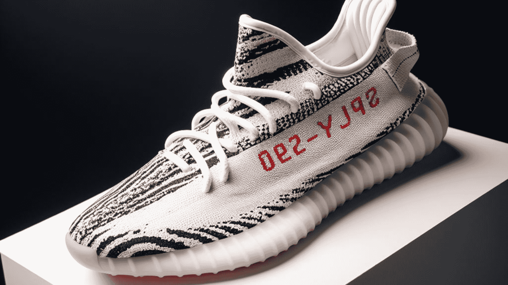

How did Celebrity Based Fashion Brands Get so Popular?

In today's dynamic fashion landscape, the synergy between celebrities and fashion has reached new heights, giving rise to the phenomenon of Celebrity-Backed Fashion Brands. These brands, often associated with star power, have not only become popular but also play a pivotal role in shaping contemporary fashion trends. This article explores the captivating world of Celebrity-Backed Fashion Brands, shedding light on why they have gained immense popularity and continue to be a driving force in the fashion industry.
Table of contents
The Celebrity Effect
1. Celebrity Dresses: A Source of Inspiration
Celebrities are renowned for their impeccable style, and their choice of dresses can trigger fashion trends that resonate with their fan base. From red carpet appearances to everyday street style, the allure of celebrity dresses is undeniable. Fans eagerly follow their favorite stars' fashion choices, making celebrity dresses a topic of fascination and emulation. As a result, fashion brands often seek to replicate these iconic looks, capitalizing on the influence of celebrities on consumer fashion preferences.
2. Championing Diversity with Black-Owned Clothing Brands
The fashion industry has been undergoing a transformative shift towards inclusivity and diversity, and black-owned clothing brands are at the forefront of this movement. These brands not only cater to a broader audience but also promote representation and unique fashion perspectives. By embracing diversity in their designs and marketing strategies, black-owned clothing brands resonate with consumers who seek authenticity and inclusivity in their fashion choices. This emphasis on diversity contributes to their growing popularity in the fashion market.
The Celebrity-Brand Connection
3. From Icons to Designers: Celebrity Clothing Lines
Celebrities have harnessed their star power to venture into the world of fashion design, creating their clothing lines. This strategic move blurs the lines between celebrity and designer, allowing fans to access the fashion sensibilities of their idols. Whether it's Rihanna's Fenty, Kanye West's Yeezy, or Victoria Beckham's eponymous label, these celebrity clothing lines not only cater to their dedicated fan base but also attract wider audiences interested in celebrity-endorsed fashion.
4. Credibility and Visibility: Celebrity Endorsements
Celebrity endorsements have long been a staple of fashion marketing. Famous personalities lend their credibility and visibility to existing fashion brands, bridging the gap between consumers and these brands. This partnership enhances brand recognition and fosters trust among consumers. When celebrities endorse a fashion brand, they not only become the face of the brand but also convey a sense of authenticity and desirability, making the brand more appealing to their fan base.
The Popularity and Impact
5. The Irresistible Appeal of Celebrities
Celebrities are regarded as trend authorities, with their fashion choices often setting trends that inspire fashion enthusiasts worldwide. Their influence is not limited to red carpet events but extends to everyday wear. Fans aspire to replicate the styles of their favorite stars, contributing to the popularity of celebrity-backed fashion brands.
6. Marketing Power of Social Media
The connection of celebrities and social media platforms has revolutionized fashion marketing. Celebrities' social media accounts serve as powerful promotional tools for the brands they endorse or own. The reach and engagement of these platforms amplify the visibility of Celebrity-Backed Fashion Brands, creating a buzz that resonates with a global audience. This marketing power is a significant factor driving the popularity of these brands.
7. Inclusivity, Representation, and Authenticity
Brands associated with celebrities often emphasize inclusivity, celebrating diverse fashion perspectives. This resonates with consumers who seek authentic and relatable fashion choices. The presence of celebrities in these brands' campaigns and designs reinforces the message of representation, creating a sense of belonging among consumers.
The Future of Celebrity-Backed Fashion Brands
As the fashion industry continues to evolve, Celebrity-Backed Fashion Brands are poised to remain at the forefront of innovation and influence. Whether it's celebrity dresses, black-owned clothing brands, or celebrity endorsements, these brands are a testament to the enduring impact of celebrities on the fashion world. Their ability to capture the essence of star power and translate it into wearable, relatable fashion makes them a driving force in the ever-changing landscape of fashion.
Conclusion
In conclusion, Celebrity-Backed Fashion Brands are more than just a trend; they represent a dynamic fusion of star power and fashion influence. As consumers seek authenticity, diversity, and representation in their fashion choices, these brands are likely to maintain their popularity and continue shaping the fashion industry.